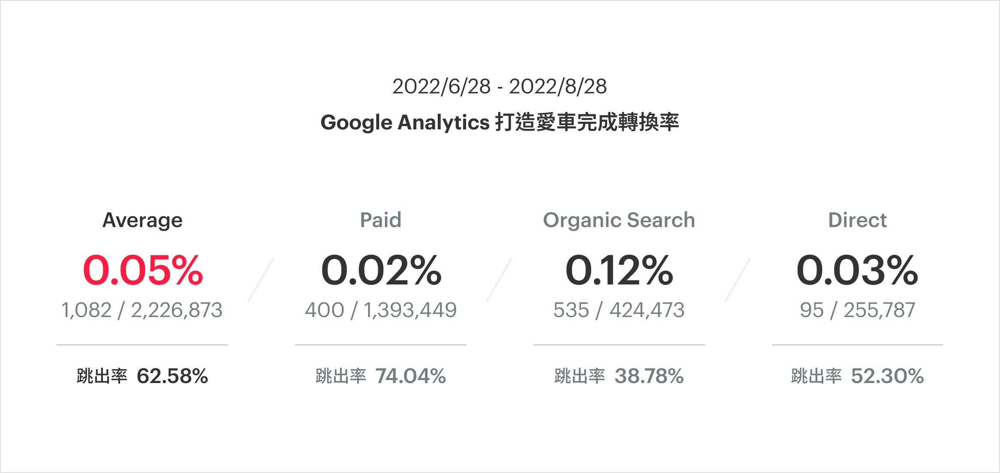
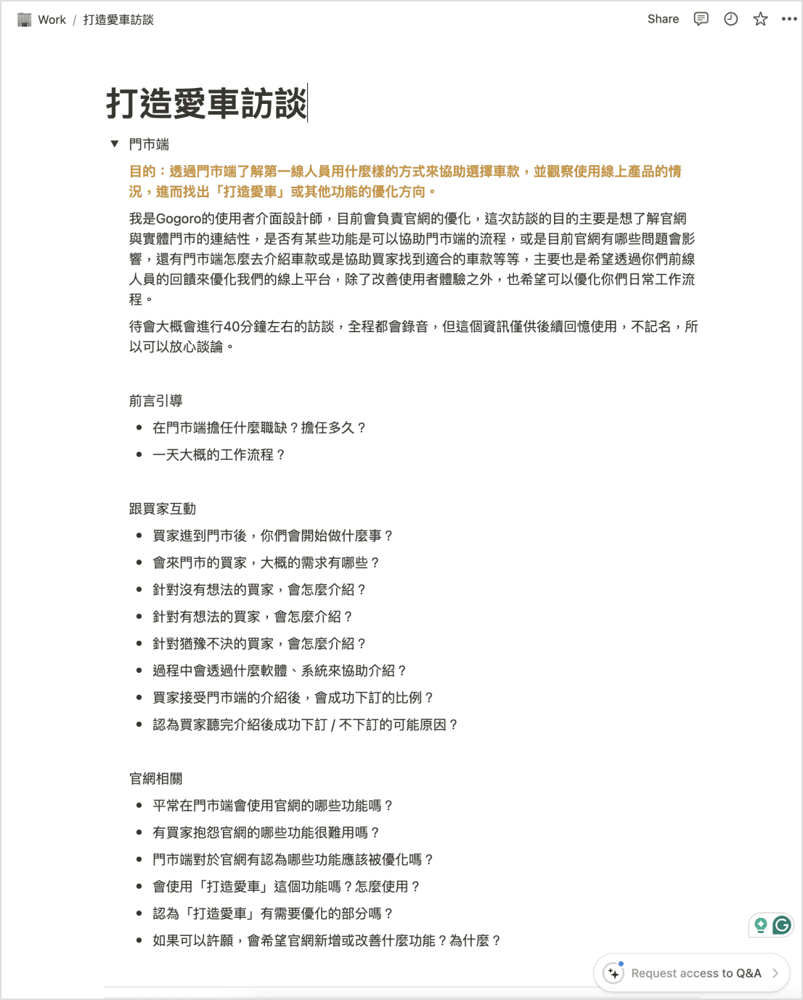
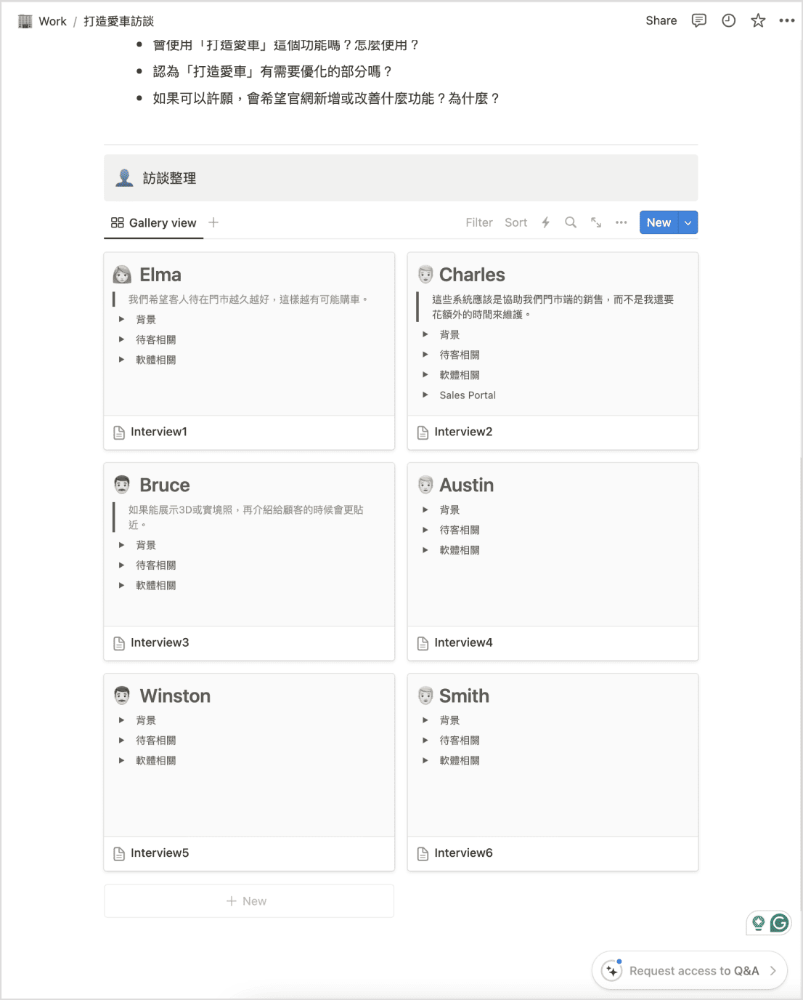
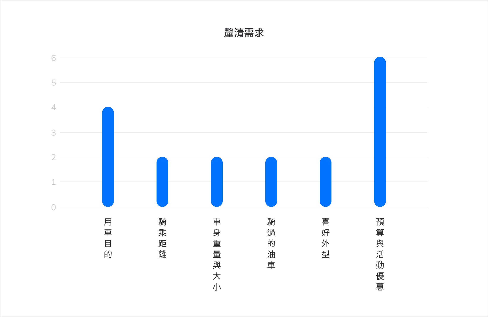
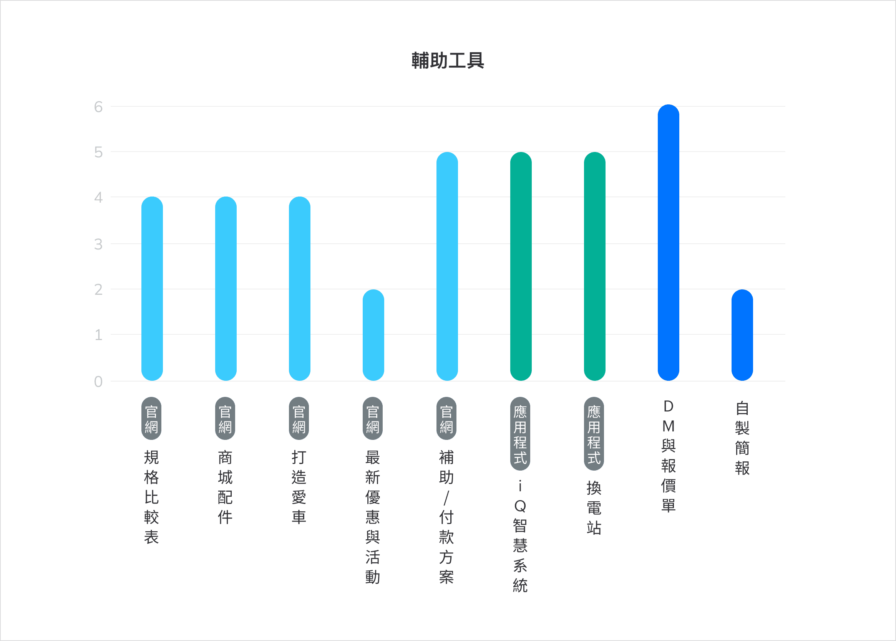
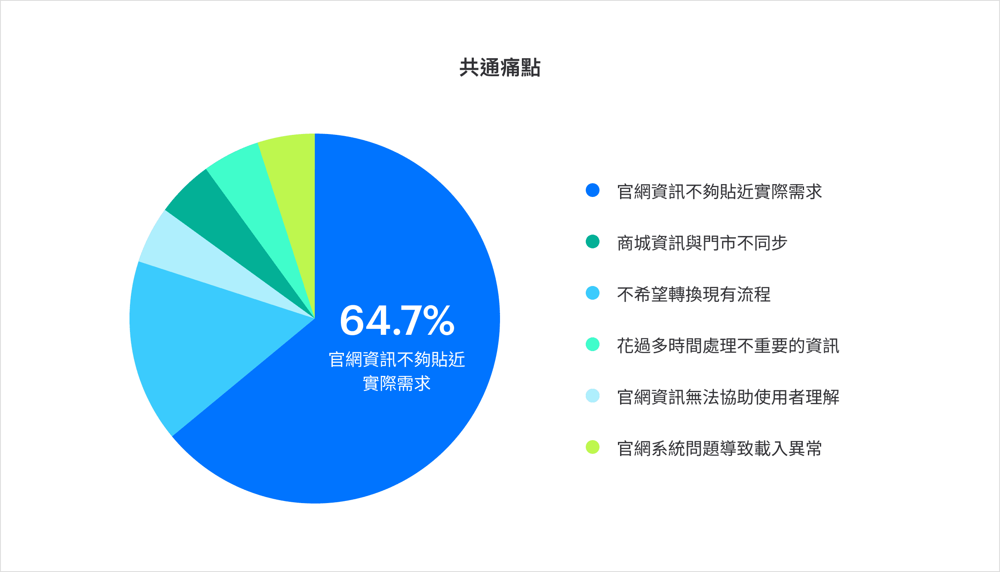

Overview
Building your scooter is one of the main functions of Gogoro’s official website to interact with users. It allows users to simulate the scooter models and accessories they are interested in online. Due to adjustments over the years in response to business needs, this function has not been able to achieve the original expectations.
So the first task assigned after joining Gogoro was to use the existing resources at hand to propose a revision proposal for building your scooter.
-
Role
UI/UX Designer
-
Duration
3 weeks
Challenge
In order to avoid the leakage of business secrets, Gogoro’s scooter naming and classification method is relatively obscure, and it took me longer to understand it at first. In addition to the optimization of the operating interface, managers also expect to see more motivations for optimization, such as website performance, impact on various departments, sales benefits, etc.
From a business perspective, it is a big test to help users understand the differences between scooters and to independently sort out supporting data other than interface design.

Google Analytics
In order to understand the current completion status of building your scooter, we specifically asked front-end colleagues to provide GA data from the past two months. It can be seen that the average conversion rate is less than 1%, and even the conversion rate of natural search is very low, so there must be some problems with the process.
Stakeholder Interviews
In addition to the pain points in the interface, I also had to find out if there were other motivations for optimization, so I chose to arrange interviews at Gogoro stores, starting from the interaction between front-line sales staff and customers, to see whether it's useful in the entire transaction process. And extend the questionnaire to how "building your scooter" affect sales and customers.


How
The main purpose of the interview structure was to understand the daily process at the store and the interaction with customers, and then extend to related questions about the official website and building your scooter. I planned all interviews alone, visited 4 stores in total and conducted 6 interviews, including store managers and senior sales staff.
The following is divided into four key points, clarifying needs, assisting tools, common pain points, and interview observations.

Needs
The questions asked by each store's sales when exploring customer needs are similar, but the order is different, such as commuting or leisure use, how far they ride, preferred scooter weight, whether they have ever ridden a gasoline motorcycle, and of course the last important budget considerations.
Understanding customer preferences and needs can be systematized

Assistant Tools
During the interview, it was found that in addition to scooter-related issues, the sales staff also needs to help customers eliminate other concerns, such as the style of accessories, the convenience of battery swapping, the difference with gasoline motorcycles, etc. Some concerns are also caused by the lack of clear information from the official website.
Therefore, the various functions of the official website are tools the sales team relies on, and even senior store managers will make their own presentations to explain them.
If the functions of the official website are properly designed, it will be helpful to the communication between sales and customers.

Common Issues
Most of the feedback from store sales on the functions of the official website is that there is a gap between information and actual needs. For example, it is impossible to understand the actual use effect of accessories, not sure how to find a suitable scooter model, inefficient use of specification comparison tables, etc.
The impact of the function on the official website on the store cannot be underestimated. It can be a tool to assist communication, or it can increase the business burden of communication and clarification.
Summary
It can be seen that the positive benefits to optimize "building your scooter" are not only a fun experience for users, but also it can reduce communication costs on the store side and improve sales performance. If it can be combined with the order system, it can even improve overall operating efficiency.
When the sales receives customers, it is like the offline version of building your scooter. Therefore, if we can show the value of building your scooter online, it will definitely reduce the burden on the store and increase the willingness to buy.